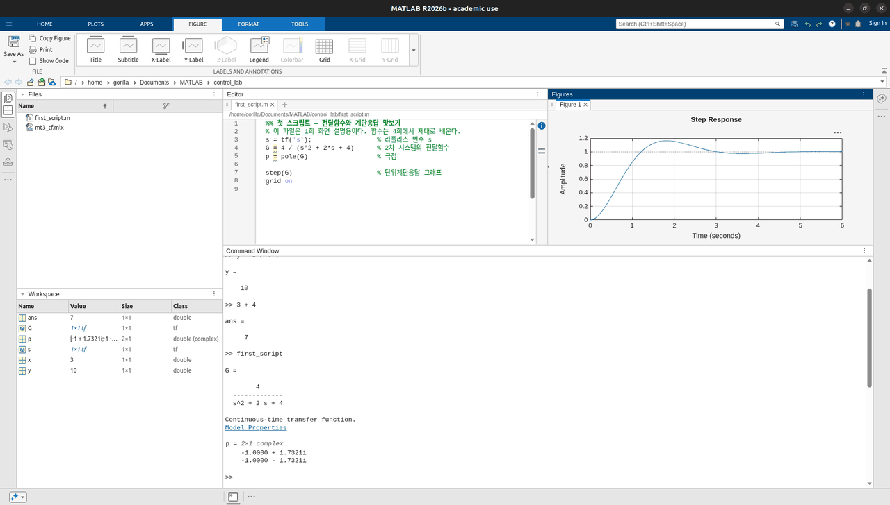
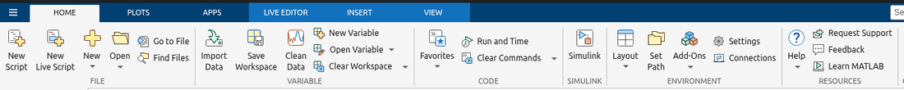
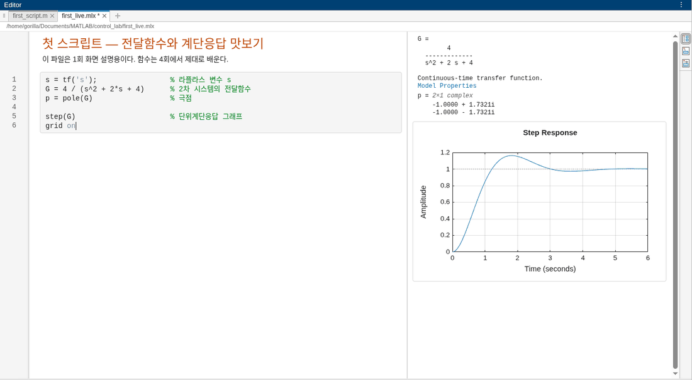

<!doctype html>
<html lang="ko">
<head>
<meta charset="utf-8">
<meta name="viewport" content="width=device-width, initial-scale=1">
<title>01회 · MATLAB 소개와 설치 | 제어공학 MATLAB 실습</title>
<script>(function(){try{var t=localStorage.getItem('theme');if(t)document.documentElement.dataset.theme=t}catch(e){}})();</script>
<link rel="stylesheet" href="../assets/site.css">
<link rel="stylesheet" href="assets/lecture.css">
<script>window.MathJax={tex:{inlineMath:[['\\(','\\)']],displayMath:[['$$','$$']]},
  options:{skipHtmlTags:['script','noscript','style','textarea','pre','code']}};</script>
<script defer src="https://cdn.jsdelivr.net/npm/mathjax@3/es5/tex-mml-chtml.js"></script>
</head>
<body>
<header class="bar">
  <div class="barin wide">
    <a class="up" href="index.html" aria-label="제어공학 MATLAB 실습 회차 목록"><svg viewBox="0 0 24 24" width="17" height="17" fill="none" stroke="currentColor" stroke-width="1.8" stroke-linecap="round" stroke-linejoin="round"><path d="M15 5l-7 7 7 7"/></svg></a>
    <nav class="crumb" aria-label="경로">
      <a href="../index.html">강의자료</a><span class="sep">/</span><a href="index.html">제어공학 MATLAB 실습</a><span class="sep">/</span><span class="here">01회 · MATLAB 소개와 설치</span>
    </nav>
    <span class="spacer"></span>
    <div class="navlinks"><a class="navlink" href="matlab_02.html" aria-label="다음 회차"><svg viewBox="0 0 24 24" width="17" height="17" fill="none" stroke="currentColor" stroke-width="1.8" stroke-linecap="round" stroke-linejoin="round"><path d="M9 5l7 7-7 7"/></svg></a></div>
    <div class="seg" data-theme-switch role="group" aria-label="밝기">
      <button type="button" data-mode="auto" aria-pressed="true">자동</button>
      <button type="button" data-mode="light" aria-pressed="false">밝게</button>
      <button type="button" data-mode="dark" aria-pressed="false">어둡게</button>
    </div>
  </div>
</header>
<div class="wrap">

<nav class="toc">
  <div class="toc-title">이 회차 목차</div>
  <a href="#summary">한 장 요약</a>
  <a href="#s1">① MATLAB이란</a>
  <a class="sub" href="#story">📖 MATLAB의 첫 무대</a>
  <a href="#s2">② 제어공학과 MATLAB</a>
  <a href="#s3">③ 설치 — 아카데믹 라이선스</a>
  <a class="sub" href="#s3-products">설치할 제품</a>
  <a class="sub" href="#s3-check">설치 확인 — <code>version</code></a>
  <a href="#s4">④ MATLAB 데스크톱 화면</a>
  <a href="#s5">⑤ 명령 창과 변수</a>
  <a class="sub" href="#s5-names">변수 이름 규칙</a>
  <a href="#s6">⑥ 작업공간 관리 — <code>whos</code> · <code>clear</code> · <code>clc</code></a>
  <a href="#s7">⑦ 스크립트 파일 (<code>.m</code>)</a>
  <a class="sub" href="#s7-names">파일 이름과 현재 폴더</a>
  <a href="#s8">⑧ 라이브 스크립트 (<code>.mlx</code>)</a>
  <a href="#s9">⑨ 도움말 — <code>help</code> · <code>doc</code></a>
  <a href="#lab">🧪 실습</a>
  <a href="#exercise">📝 연습문제</a>
  <a href="#check">✅ 점검</a>
  <a href="#more">조금 더 알아두면</a>
</nav>

<main>

  <div class="lec-no">제어공학 MATLAB 실습 · 01회 · 1부 MATLAB 기초</div>
  <h1>MATLAB 소개와 설치</h1>

  <div class="questions">
    <span class="lab">오늘 답할 질문</span>
    <ol>
      <li>MATLAB은 무엇이고, 왜 제어공학 수업에서 MATLAB을 쓰나?</li>
      <li>내 노트북에 MATLAB을 어떻게 설치하나? 학교 메일은 왜 필요한가?</li>
      <li>MATLAB 화면의 창들은 각각 무엇을 하나?</li>
      <li>명령 창에 치는 것과 스크립트 파일에 쓰는 것은 무엇이 다른가? 라이브 스크립트는 또 무엇인가?</li>
    </ol>
  </div>

  <p>
    제어공학 시간에는 전달함수를 세우고, 극점을 구하고, 계단응답의 최대초과와 정착시간을 공식으로 계산한다.
    근궤적은 규칙 몇 가지를 따라 손으로 스케치하고, 보드 선도는 점근선을 그어 모양을 잡는다.
    손으로 푸는 것이 이론을 익히는 가장 좋은 방법인 것은 맞다. 그런데 손으로만 풀면
    <strong>내가 구한 답이 맞는지 확인할 방법이 마땅치 않다</strong>. 극점이 셋을 넘어가면 계산 자체가 길어지기도 한다.
  </p>
  <p>
    이 실습은 그 확인 도구를 손에 쥐는 시간이다. 교재에서 손으로 풀던 것을 MATLAB 코드로 다시 계산하고 그려 보면서,
    <strong>코드 한 줄이 이론의 어느 식과 이어지는지</strong>를 따라간다. 오늘은 그 첫 회로,
    MATLAB이 무엇인지, 어떻게 설치하는지, 화면은 어떻게 생겼는지, 코드를 어디에 쓰고 어떻게 실행하는지를 본다.
  </p>

  <!-- ── 한 장 요약 ── -->
  <h2 id="summary">한 장 요약</h2>
  <p class="readme-first">읽는 법: 왼쪽은 오늘 나오는 화면 요소와 명령, 가운데는 하는 일, 오른쪽은 실습 내내 쓰게 되는 자리다.</p>
  <div class="tablewrap">
  <table class="summary-table">
    <tr><th>이름</th><th>하는 일</th><th>이 실습에서 쓰는 자리</th></tr>
    <tr><td>명령 창 (Command Window)</td><td>한 줄씩 치고 바로 결과를 본다</td><td>값 확인, 짧은 계산, 도움말</td></tr>
    <tr><td>편집기 (Editor) · 스크립트 <code>.m</code></td><td>명령을 파일에 모아 두고 한 번에 실행한다</td><td><strong>모든 실습과 과제 코드</strong></td></tr>
    <tr><td>라이브 스크립트 <code>.mlx</code></td><td>글·코드·출력·그림을 한 문서에 담는다</td><td>코드와 결과를 한 문서로 정리할 때</td></tr>
    <tr><td>작업공간 (Workspace)</td><td>지금 메모리에 있는 변수 목록</td><td>변수가 제대로 만들어졌는지 확인</td></tr>
    <tr><td><code>;</code> · <code>%</code> · <code>%%</code></td><td>출력 숨기기 · 주석 · 섹션 나누기</td><td>모든 코드</td></tr>
    <tr><td><code>whos</code> · <code>clear</code> · <code>clc</code> · <code>close all</code></td><td>변수 보기 · 변수 지우기 · 화면 지우기 · 그림 창 닫기</td><td>스크립트 첫 줄 <code>clc; clear; close all</code></td></tr>
    <tr><td><code>help</code> · <code>doc</code></td><td>함수 설명 보기</td><td>처음 보는 함수를 만났을 때</td></tr>
    <tr><td><code>version</code></td><td>설치된 MATLAB 버전 확인</td><td>설치 직후 한 번</td></tr>
  </table>
  </div>
  <div class="interp">
    <strong>해석:</strong> 오늘 외울 것은 거의 없다. 대신 <strong>코드를 스크립트 파일에 쓰고 실행해서 명령 창과 그림 창으로 결과를 확인하는 흐름</strong>
    하나를 손에 익히면 된다. 뒤 회차는 전부 이 흐름 위에서 돈다.
  </div>

  <!-- ── ① ── -->
  <h2 id="s1">① MATLAB이란</h2>
  <p>
    프로그래밍 언어를 이미 하나 배운 학생이라면 이런 생각이 들 수 있다. C로도 계산은 되고, 파이썬은 공짜인데
    왜 굳이 MATLAB을 깔아야 하나? 답은 MATLAB이 <strong>무엇을 위해 만들어졌는가</strong>에 있다.
  </p>
  <p>
    MATLAB은 <strong>MAT</strong>rix <strong>LAB</strong>oratory의 줄임말이다. 이름 그대로 <strong>행렬 계산을 하기 위해 만든 언어이자 프로그램</strong>이다.
    MATLAB에서는 숫자 하나도 1×1 행렬로 다룬다. 그래서 공학 수식, 특히 선형대수와 미분방정식이 들어가는 계산을
    <strong>수식에 가까운 모양 그대로</strong> 적을 수 있다.
  </p>
  <div class="tablewrap">
  <table>
    <tr><th>특징</th><th>무슨 뜻인가</th><th>C 언어와 비교하면</th></tr>
    <tr><td>인터프리터 방식</td><td>한 줄을 치면 바로 실행되고 결과가 나온다</td><td>C는 전체를 컴파일한 뒤에야 실행된다</td></tr>
    <tr><td>선언이 없다</td><td><code>x = 3</code>이라고 쓰는 순간 변수가 생긴다</td><td>C는 <code>int x;</code>처럼 타입을 먼저 선언한다</td></tr>
    <tr><td>행렬이 기본 단위</td><td><code>A * B</code>가 곧 행렬 곱이다</td><td>C는 이중 for문으로 직접 곱한다</td></tr>
    <tr><td>그래프가 내장</td><td><code>plot</code> 한 줄로 그림이 뜬다</td><td>C는 그래프 라이브러리를 따로 붙여야 한다</td></tr>
    <tr><td>툴박스(toolbox)</td><td>분야별 함수 묶음을 더해 설치한다</td><td>라이브러리와 비슷하지만 회사가 만들어 검증한다</td></tr>
  </table>
  </div>
  <div class="interp">
    <strong>해석:</strong> 이 실습에서 특히 중요한 것은 마지막 줄이다. 제어공학에 필요한 함수 — 전달함수(<code>tf</code>), 계단응답(<code>step</code>),
    근궤적(<code>rlocus</code>), 보드 선도(<code>bode</code>) — 는 <strong>Control System Toolbox</strong>라는 툴박스에 들어 있다.
    블록선도를 그려서 시뮬레이션하는 <strong>Simulink</strong>도 같은 회사 제품이다. 교재의 예제와 그림이 MATLAB으로 만들어진 경우가 많은 것도 이 때문이다.
  </div>

  <details class="story" id="story">
    <summary>MATLAB의 첫 무대는 제어 학회였다 (5분 · 건너뛰어도 됩니다)</summary>

    <h4>① 1979년 — 손과 포트란으로 푸는 행렬 문제</h4>
    <p>
      클리브 몰러(Cleve Moler)는 수치해석을 연구하던 미국의 수학자다. 1979~80년에 스탠퍼드 대학교의 방문 교수로 대학원 수치해석 과목을 맡았다.
      수강생 절반쯤은 공대생이었는데, 이들은 작은 행렬 문제는 손으로, 큰 문제는 포트란(Fortran) 프로그램을 직접 짜서 풀고 있었다.
      몰러는 이 수업에서 자기가 만든 <strong>「행렬 계산기」</strong>를 소개했다. 그것이 첫 MATLAB이다. 공대생들은 이 계산기를 무척 좋아했다고 한다.
    </p>

    <h4>② 제어 엔지니어가 그것을 제품으로 만들었다</h4>
    <p>
      잭 리틀(Jack Little)은 MIT에서 전기공학을 공부하고 스탠퍼드 대학원에 온 엔지니어였다. 몰러의 수업을 들은 친구가 MATLAB을 보여 주자,
      그는 곧바로 자기 일 — <strong>제어 시스템과 신호처리</strong> — 에 MATLAB을 쓰기 시작했다.
      1983년 리틀은 이것을 상용 제품으로 만들자고 제안했다. 직장을 그만두고, 백화점에서 IBM 호환 PC를 한 대 사서,
      스티브 뱅거트(Steve Bangert)와 함께 1년 반 동안 C 언어로 MATLAB을 새로 짰다.
      1984년 세 사람(리틀 · 뱅거트 · 몰러)이 MathWorks를 세운다.
    </p>

    <h4>③ 여기가 재미있다 — 데뷔 무대가 제어 학회</h4>
    <p>
      새로 짠 PC-MATLAB이 처음 세상에 나온 곳은 1984년 12월 라스베이거스에서 열린 <strong>IEEE Conference on Decision and Control</strong>이다.
      이름 그대로 <strong>제어</strong> 분야의 학회다. 수학자가 만든 행렬 계산기가 제어 엔지니어의 손을 거쳐 제어 학회에서 첫선을 보인 것이다.
      새 MATLAB에는 함수·그래픽과 함께 <strong>툴박스</strong>라는 개념이 들어갔는데, 처음 나온 전문 툴박스 둘이 <strong>제어(control)와 신호(signal)</strong>였다.
    </p>

    <h4>④ 그래서 지금 우리 손에 남은 것</h4>
    <p>이 실습에서 쓰는 Control System Toolbox는 MATLAB에서 <strong>가장 오래된 툴박스 가운데 하나</strong>다.</p>

    <h4>⑤ 숫자로 확인한다</h4>
    <p>
      1979년 수업용 계산기 → 1984년 회사 설립과 첫 공개 → <strong>1985년 Control System Toolbox</strong>.
      수업 교재에서 행렬 계산기가 나온 지 6년 만에 제어 설계 도구가 붙었다. C로 다시 짜는 데 걸린 시간은 1년 반이다.
    </p>

    <h4>⑥ 출처</h4>
    <ul class="src">
      <li>Cleve Moler, <a href="https://blogs.mathworks.com/cleve/2018/03/09/matlab-history-pc-matlab-version-1-0/">MATLAB History, PC-MATLAB Version 1.0</a> (Cleve's Corner, 2018)</li>
      <li>Cleve Moler, Jack Little, <a href="https://hopl4.sigplan.org/details/hopl-4-papers/3/A-History-of-MATLAB">A History of MATLAB</a> (HOPL IV, 2020) — Control System Toolbox 1985, Signal Processing Toolbox 1987</li>
    </ul>
  </details>

  <!-- ── ② ── -->
  <h2 id="s2">② 제어공학과 MATLAB</h2>
  <p>
    그렇다면 이 실습에서 MATLAB으로 구체적으로 무엇을 하게 되나? 교재에서 손으로 하던 일과 MATLAB 함수를 나란히 놓으면 아래와 같다.
    오른쪽 열은 그 함수를 제대로 배우는 회차다.
  </p>
  <div class="tablewrap">
  <table>
    <tr><th>교재에서 하는 일</th><th>손으로는</th><th>MATLAB으로는</th><th>회차</th></tr>
    <tr><td>특성방정식의 근(극점) 구하기</td><td>근의 공식, 인수분해</td><td><code>roots</code> · <code>pole</code></td><td>02 · 04</td></tr>
    <tr><td>응답을 그래프로 보기</td><td>점을 찍어 그린다</td><td><code>plot</code></td><td>03</td></tr>
    <tr><td>전달함수 세우기 · 피드백 연결</td><td>블록선도 정리</td><td><code>tf</code> · <code>feedback</code></td><td>04</td></tr>
    <tr><td>계단응답 구하기</td><td>부분분수 → 역라플라스 변환</td><td><code>step</code> · <code>lsim</code></td><td>04</td></tr>
    <tr><td>최대초과 · 정착시간 계산</td><td>2차 시스템 공식</td><td><code>stepinfo</code> · <code>damp</code></td><td>04</td></tr>
    <tr><td>근궤적 그리기</td><td>점근선 · 분기점 · 출발각 규칙</td><td><code>rlocus</code> · 직접 만든 <code>root_locus</code></td><td>05</td></tr>
    <tr><td>성능을 만족하는 이득 \(K\) 찾기</td><td>s 평면에 영역을 긋는다</td><td><code>rlocus</code>의 반환값</td><td>06</td></tr>
    <tr><td>PD · PI · PID 제어기 설계</td><td>각도 조건 · 크기 조건</td><td><code>evalfr</code> · Simulink</td><td>07</td></tr>
    <tr><td>보드 선도 · 대역폭 · 공진</td><td>점근선 근사</td><td><code>bode</code> · <code>bandwidth</code> · <code>margin</code></td><td>08</td></tr>
  </table>
  </div>
  <div class="interp">
    <strong>해석:</strong> MATLAB은 손계산을 <strong>대신하는</strong> 도구가 아니라 <strong>확인하는</strong> 도구로 쓸 때 가장 값어치가 있다.
    손으로 구한 극점이 \(-1 \pm j1.73\)인데 <code>pole</code>이 다른 값을 내면, 어디선가 틀린 것이다.
    반대로 MATLAB이 낸 숫자를 손으로 한 번도 구해 보지 않으면 그 숫자가 무슨 뜻인지 알기 어렵다.
    그래서 이 실습의 자료는 <strong>식 → 숫자 대입 → MATLAB 출력</strong>을 늘 나란히 놓는다.
  </div>

  <!-- ── ③ ── -->
  <h2 id="s3">③ 설치 — 학교 메일로 받는 아카데믹 라이선스</h2>
  <p>
    MATLAB은 유료 프로그램이다. 개인이 사면 비싸지만, 학교가 MathWorks와 맺은 <strong>아카데믹(교육용) 라이선스</strong>로
    재학생은 학교 메일 계정만 있으면 설치해 쓸 수 있다. 핵심은 하나다 — <strong>MathWorks 계정을 반드시 학교 메일로 만든다.</strong>
    MathWorks는 계정의 메일 주소를 보고 그 사람이 어느 학교 소속인지 판단한다.
  </p>
  <!-- TODO: 미검증 — 순천향대 라이선스가 학교 메일 계정에 자동으로 연결되는지, 학교 포털을 거쳐야 하는지 확인하지 못했다. 메일 도메인(@sch.ac.kr)도 확인 필요 -->

  <div class="tablewrap">
  <table>
    <tr><th>단계</th><th>무엇을 하나</th><th>어떻게</th><th>확인하는 것 ✅</th></tr>
    <tr><td>1</td><td>MathWorks 계정 만들기</td><td><code>mathworks.com</code> 오른쪽 위 로그인 → 계정 만들기. <strong>이메일 칸에 학교 메일</strong>(@sch.ac.kr)을 넣고, 용도는 학업용(Academic Use)을 고른다</td><td>학교 메일함에 확인 메일이 왔고, 링크를 눌렀다</td></tr>
    <tr><td>2</td><td>학교 라이선스 확인</td><td>학교 메일 계정으로 로그인한 뒤 내 계정 페이지의 라이선스 목록을 본다</td><td>학교 이름이 붙은 아카데믹 라이선스가 보인다</td></tr>
    <tr><td>3</td><td>설치 프로그램 받기</td><td>다운로드 페이지에서 <strong>최신 릴리스</strong>를 고르고 <strong>Windows</strong>용 설치 프로그램을 받는다</td><td>설치 파일이 받아졌다</td></tr>
    <tr><td>4</td><td>설치</td><td>설치 프로그램을 실행 → <strong>학교 메일 계정으로 로그인</strong> → 라이선스 선택 → 설치 폴더(기본값) → 제품 선택(아래 표)</td><td>설치가 끝났다는 화면이 뜬다</td></tr>
    <tr><td>5</td><td>첫 실행</td><td>시작 메뉴에서 MATLAB 실행 → 처음 한 번 로그인</td><td>④절의 데스크톱 화면이 뜨고, 명령 창에 <code>version</code>을 치면 버전이 나온다</td></tr>
  </table>
  </div>

  <div class="box trap">
    <p class="boxtitle">⚠️ 개인 메일로 만든 계정에는 학교 라이선스가 붙지 않는다</p>
    <p>
      gmail·naver 같은 개인 메일로 계정을 만들면 MathWorks는 그 사람을 학교 소속으로 알아보지 못한다.
      그 계정으로는 체험판(평가판)만 받을 수 있고, 기간이 끝나면 MATLAB이 열리지 않는다.
      설치 프로그램이 로그인을 물을 때도 <strong>학교 메일 계정</strong>으로 들어가야 학교 라이선스가 목록에 나온다.
    </p>
    <p>
      이미 개인 메일로 계정을 만들었다면, 학교 메일로 계정을 하나 더 만들어 그 계정으로 설치하면 됩니다.
    </p>
  </div>

  <h3 id="s3-products">설치할 제품</h3>
  <p>
    설치 프로그램의 제품 선택 화면에는 툴박스가 수십 개 나온다. 전부 고르면 용량이 크게 늘고 설치 시간도 길어진다.
    이 실습에 필요한 것은 아래 다섯 개다.
  </p>
  <div class="tablewrap">
  <table>
    <tr><th>제품</th><th>필요한가</th><th>어디서 쓰나</th></tr>
    <tr><td><strong>MATLAB</strong></td><td>필수</td><td>전부</td></tr>
    <tr><td><strong>Control System Toolbox</strong></td><td>필수</td><td>04~08회 — <code>tf</code> · <code>step</code> · <code>rlocus</code> · <code>bode</code></td></tr>
    <tr><td><strong>Simulink</strong></td><td>필수</td><td>07회 — PID 제어기를 블록선도로 시뮬레이션</td></tr>
    <tr><td>Symbolic Math Toolbox</td><td>권장</td><td>05회 — Routh 표를 \(K\)가 들어간 식으로 세울 때 쓴다</td></tr>
    <tr><td>Simulink Control Design</td><td>선택</td><td>Simulink 모델에서 PID 이득을 자동으로 맞출 때</td></tr>
  </table>
  </div>
  <div class="interp">
    <strong>해석:</strong> 빠뜨렸어도 다시 설치할 필요는 없다. MATLAB을 연 뒤 HOME 탭의 <strong>Add-Ons</strong> 버튼으로 툴박스를 나중에 더할 수 있다.
    노트북 사양이 낮거나 설치가 계속 실패하면 같은 학교 계정으로 웹 브라우저에서 돌리는 <strong>MATLAB Online</strong>(<code>matlab.mathworks.com</code>)을 쓸 수도 있다.
  </div>

  <h3 id="s3-check">설치 확인 — <code>version</code></h3>
  <p>설치가 끝나면 명령 창(④절)에 아래 한 줄을 쳐 본다. 이 자료의 모든 출력은 아래 버전에서 실제로 돌려 받은 것이다.</p>
<!-- mcode 01/b01_version -->
<div class="mcode">
<pre class="lang-matlab"><code>version</code></pre>
<button onclick="copyCode(this)">복사</button>
<p class="outlabel">명령 창 출력</p>
<pre class="out"><code>ans =

    '26.2.0.3386108 (R2026b)'</code></pre>
</div>
<!-- /mcode -->
  <div class="box firstseen">
    <p class="boxtitle">🆕 이 코드에서 처음 나오는 것</p>
    <dl>
      <dt>version</dt>
      <dd>설치된 MATLAB의 버전 번호를 돌려준다. 괄호 안의 <code>R2026b</code>가 흔히 부르는 이름이다 — 2026년의 두 번째(b) 릴리스라는 뜻이다. MATLAB은 해마다 봄(a)과 가을(b)에 새 버전을 낸다.</dd>
      <dt>ver</dt>
      <dd>버전과 함께 <strong>설치된 툴박스 목록</strong>을 보여 준다. 위 제품 표의 툴박스가 다 깔렸는지 확인할 때 쓴다. 맨 위에 라이선스 번호가 함께 찍히므로 화면을 캡처해 공유할 때는 그 줄을 가리는 것이 좋다.</dd>
    </dl>
  </div>

  <!-- ── ④ ── -->
  <h2 id="s4">④ MATLAB 데스크톱 화면</h2>
  <p>
    MATLAB을 처음 열면 창이 여러 개로 나뉜 화면이 뜬다. 이 전체를 <strong>데스크톱(desktop)</strong>이라고 부른다.
    아래는 스크립트 하나를 실행한 직후의 모습이다. 무엇이 어디에 있는지부터 보자.
  </p>
  <figure>
    <a href="assets/img/01_desktop.png"></a>
    <figcaption>
      왼쪽 위 <strong>Files</strong>(현재 폴더의 파일), 왼쪽 아래 <strong>Workspace</strong>(변수 목록), 가운데 위 <strong>Editor</strong>(스크립트 편집기),
      오른쪽 위 <strong>Figures</strong>(그림 창), 아래 <strong>Command Window</strong>(명령 창).
      명령 창의 <code>&gt;&gt; first_script</code> 줄이 편집기의 파일을 실행한 기록이고, 그 아래가 실행 결과다.
      그림을 누르면 크게 보인다. 주소 막대의 경로는 리눅스 경로다 — 윈도우에서는 <code>C:\Users\이름\Documents\MATLAB</code>처럼 보인다.
    </figcaption>
  </figure>
  <div class="tablewrap">
  <table>
    <tr><th>창</th><th>하는 일</th><th>어떻게 쓰나</th></tr>
    <tr><td><strong>툴스트립</strong> (맨 위 탭과 버튼)</td><td>HOME · PLOTS · APPS · EDITOR 같은 탭에 기능이 모여 있다</td><td>지금 무엇을 선택했느냐에 따라 탭이 바뀐다 — 그림을 누르면 FIGURE 탭이 뜬다</td></tr>
    <tr><td><strong>주소 막대</strong> (툴스트립 아래)</td><td><strong>현재 폴더</strong>(current folder)의 경로</td><td>MATLAB은 이 폴더에 있는 스크립트를 이름만으로 실행할 수 있다 (⑦절)</td></tr>
    <tr><td><strong>Files</strong></td><td>현재 폴더 안의 파일 목록</td><td>파일을 두 번 누르면 편집기에서 열린다</td></tr>
    <tr><td><strong>Workspace</strong></td><td>지금 메모리에 있는 변수의 이름 · 값 · 크기 · 종류</td><td>코드가 만든 변수가 기대한 모양인지 확인한다</td></tr>
    <tr><td><strong>Editor</strong></td><td>스크립트·함수 파일을 쓰고 고친다</td><td>코드는 여기에 쓰고 저장한다</td></tr>
    <tr><td><strong>Command Window</strong></td><td><code>&gt;&gt;</code> 뒤에 명령을 치면 바로 실행하고 결과를 찍는다</td><td>짧은 계산, 변수 값 확인, 도움말</td></tr>
    <tr><td><strong>Figures</strong></td><td><code>plot</code>·<code>step</code> 등이 그린 그림</td><td>처음에는 따로 떨어진 창으로 뜬다. 창 오른쪽 위 버튼으로 데스크톱 안에 붙일 수 있다</td></tr>
  </table>
  </div>
  <div class="interp">
    <strong>해석:</strong> 창의 배치는 마우스로 끌어서 바꿀 수 있고, 버전마다 기본 배치가 조금씩 다르다. 배치보다 <strong>창의 이름</strong>을 기억해 두면 된다.
    R2025a부터는 데스크톱이 새로 바뀌어 왼쪽 세로 막대의 아이콘으로 Files·Workspace 같은 창을 열고 닫는다.
    오른쪽에 <strong>Copilot</strong>(MATLAB에 붙은 AI 도우미) 창이 함께 뜨기도 하는데, 이 화면에서는 닫아 두었다.
  </div>

  <p>맨 위 <strong>HOME</strong> 탭에는 처음에 자주 누르는 버튼이 모여 있다.</p>
  <figure>
    
    <figcaption>
      왼쪽 끝 <strong>New Script</strong>(새 스크립트 <code>.m</code>)와 <strong>New Live Script</strong>(새 라이브 스크립트 <code>.mlx</code>),
      가운데 <strong>Simulink</strong>(07회), 오른쪽 <strong>Add-Ons</strong>(툴박스 추가 설치)와 <strong>Layout</strong>(창 배치를 기본값으로 되돌리기)을 본다.
    </figcaption>
  </figure>

  <!-- ── ⑤ ── -->
  <h2 id="s5">⑤ 명령 창과 변수</h2>
  <p>
    명령 창의 <code>&gt;&gt;</code>를 <strong>프롬프트</strong>라고 한다. 그 뒤에 식을 치고 <kbd>Enter</kbd>를 누르면 MATLAB이 바로 계산해 결과를 찍는다.
    C처럼 컴파일하는 단계가 없다. 가장 간단한 계산부터 해 보자.
  </p>
<!-- mcode 01/b02_calc -->
<div class="mcode">
<pre class="lang-matlab"><code>x = 3
y = x^2 + 1
3 + 4</code></pre>
<button onclick="copyCode(this)">복사</button>
<p class="outlabel">명령 창 출력</p>
<pre class="out"><code>x =

     3


y =

    10


ans =

     7</code></pre>
</div>
<!-- /mcode -->
  <p>
    출력을 읽어 보면 <code>x =</code> 다음 줄에 <code>3</code>이, <code>y =</code> 다음 줄에 \(3^2+1=10\)이 찍혔다.
    <code>=</code>는 수학의 「같다」가 아니라 <strong>오른쪽을 계산해서 왼쪽 이름에 넣는다</strong>는 뜻이다(대입, assignment).
    세 번째 줄 <code>3 + 4</code>는 받을 변수를 적지 않았는데, 결과는 <code>ans</code>라는 이름으로 찍혔다.
  </p>
  <div class="box firstseen">
    <p class="boxtitle">🆕 이 코드에서 처음 나오는 것</p>
    <dl>
      <dt>x = 3</dt>
      <dd>변수(variable) <code>x</code>를 만들고 3을 넣는다. C처럼 <code>int</code>·<code>double</code>을 먼저 선언하지 않는다 — 대입하는 순간 변수가 생긴다. 숫자는 기본으로 실수(<code>double</code>)다.</dd>
      <dt>^</dt>
      <dd>거듭제곱. <code>x^2</code>는 \(x^2\)이다. 연산자 전체는 02회에서 정리한다.</dd>
      <dt>ans</dt>
      <dd>answer의 줄임. 결과를 받을 변수를 적지 않으면 MATLAB이 자동으로 <code>ans</code>에 넣는다. 여기서는 <code>3 + 4</code>의 결과 7이 들어갔다.</dd>
    </dl>
  </div>

  <h3>출력 숨기기 — 세미콜론 <code>;</code>과 주석 <code>%</code></h3>
  <p>
    계산할 때마다 결과가 찍히면 편하지만, 중간 계산이 수십 줄이면 화면이 금방 지저분해진다.
    줄 끝에 <strong>세미콜론 <code>;</code></strong>을 붙이면 계산은 하되 화면에는 찍지 않는다.
  </p>
<!-- mcode 01/b03_semicolon -->
<div class="mcode">
<pre class="lang-matlab"><code>a = 10;          % 세미콜론 — 계산은 하고 화면에는 찍지 않는다
b = 20;
c = a + b        % 세미콜론이 없으면 결과를 찍는다</code></pre>
<button onclick="copyCode(this)">복사</button>
<p class="outlabel">명령 창 출력</p>
<pre class="out"><code>c =

    30</code></pre>
</div>
<!-- /mcode -->
  <p>
    세 줄 중에 결과가 찍힌 것은 세미콜론이 없는 <code>c = a + b</code> 하나뿐이다. <code>a</code>와 <code>b</code>도 만들어지기는 했다 — Workspace 창에 보인다.
    <code>%</code> 뒤의 글은 <strong>주석</strong>(comment)이다. MATLAB은 그 줄의 <code>%</code>부터 끝까지를 읽지 않는다.
  </p>
  <div class="box trap">
    <p class="boxtitle">⚠️ C와 반대다 — 세미콜론은 「문장의 끝」이 아니라 「출력 끄기」다</p>
    <p>
      C에서 세미콜론을 빠뜨리면 컴파일 오류가 나지만, MATLAB에서는 아무 문제 없이 돌고 <strong>결과가 화면에 찍힐 뿐</strong>이다.
      그래서 큰 행렬을 만드는 줄에 세미콜론을 빠뜨리면 명령 창에 숫자 수천 개가 쏟아진다.
      반대로 확인하고 싶은 값이 안 보이면, 그 줄 끝의 세미콜론을 지워 보면 된다.
    </p>
  </div>

  <p>받을 변수를 적지 않은 결과는 늘 <code>ans</code>로 간다. <code>ans</code>는 <strong>바로 앞 결과로 계속 덮어써진다</strong>.</p>
<!-- mcode 01/b04_ans -->
<div class="mcode">
<pre class="lang-matlab"><code>x = 3;
x * 2            % 받을 변수가 없으면 결과는 ans 에 들어간다
ans + 1          % ans 는 바로 앞 결과다</code></pre>
<button onclick="copyCode(this)">복사</button>
<p class="outlabel">명령 창 출력</p>
<pre class="out"><code>ans =

     6


ans =

     7</code></pre>
</div>
<!-- /mcode -->
  <p>첫 결과 \(3 \times 2 = 6\)이 <code>ans</code>에 들어갔고, 다음 줄 <code>ans + 1</code>은 그 6에 1을 더한 7을 다시 <code>ans</code>에 넣었다.
    <code>ans</code>는 명령 창에서 잠깐 쓰기에는 편하지만, 스크립트에서 계속 쓸 값은 <strong>이름을 붙인 변수</strong>에 담는 것이 안전하다.</p>

  <h3 id="s5-names">변수 이름 규칙</h3>
  <div class="tablewrap">
  <table>
    <tr><th>규칙</th><th>되는 이름</th><th>안 되는 이름</th></tr>
    <tr><td>영문자로 시작한다</td><td><code>x1</code> · <code>zeta</code></td><td><code>1x</code> (숫자로 시작)</td></tr>
    <tr><td>영문자 · 숫자 · 밑줄(<code>_</code>)만 쓴다</td><td><code>settling_time</code></td><td><code>settling-time</code> (빼기로 읽힌다) · <code>정착시간</code></td></tr>
    <tr><td>대소문자를 구별한다</td><td><code>G</code>와 <code>g</code>는 다른 변수</td><td>—</td></tr>
    <tr><td><strong>함수 이름과 겹치지 않게 한다</strong></td><td><code>sqrt_val</code> · <code>my_step</code></td><td><code>sqrt</code> · <code>step</code> · <code>pole</code> · <code>ans</code></td></tr>
  </table>
  </div>
  <p>마지막 규칙은 문법 오류가 나지 않기 때문에 더 위험하다. 실제로 <code>sqrt</code>라는 변수를 만들어 보면 이렇다.</p>
<!-- mcode 01/b05_varshadow -->
<div class="mcode">
<pre class="lang-matlab"><code>sqrt = 5;        % 변수 이름을 sqrt 로 지었다
sqrt(16)         % 이제 sqrt 는 함수가 아니라 변수다 — 16번째 원소를 달라는 뜻이 된다</code></pre>
<button onclick="copyCode(this)">복사</button>
<p class="outlabel">명령 창 출력</p>
<pre class="out err"><code>Index exceeds the number of array elements. Index must not exceed 1.</code></pre>
</div>
<!-- /mcode -->
  <p>
    <code>sqrt = 5</code>는 아무 문제 없이 실행됐다. 그런데 그 뒤로 <code>sqrt</code>는 제곱근 함수가 아니라 <strong>숫자 하나짜리 변수</strong>다.
    MATLAB은 이름을 볼 때 <strong>변수를 함수보다 먼저 찾는다</strong>. 그래서 <code>sqrt(16)</code>을 「변수 <code>sqrt</code>의 16번째 원소」로 읽었고,
    원소가 1개뿐이라 「인덱스가 원소 개수를 넘었다」는 오류가 났다. 오류 문장만 봐서는 원인이 변수 이름이라는 것을 알기 어렵다.
    제어 실습에서는 <code>step</code>·<code>pole</code>·<code>zero</code>·<code>tf</code>를 변수 이름으로 쓰기 쉬우니 특히 조심하면 된다.
  </p>

  <!-- ── ⑥ ── -->
  <h2 id="s6">⑥ 작업공간 관리 — <code>whos</code> · <code>clear</code> · <code>clc</code></h2>
  <p>
    지금까지 만든 변수는 어디에 있을까? MATLAB은 실행 중에 만든 변수를 <strong>작업공간</strong>(workspace)이라는 메모리 공간에 모아 둔다.
    Workspace 창이 그것을 보여 주고, 명령으로도 볼 수 있다. 먼저 함수 이름을 가린 <code>sqrt</code> 변수를 지우고 목록을 보자.
  </p>
<!-- mcode 01/b06_whos -->
<div class="mcode">
<pre class="lang-matlab"><code>clear sqrt       % 함수 이름을 가린 변수를 지운다
whos</code></pre>
<button onclick="copyCode(this)">복사</button>
<p class="outlabel">명령 창 출력</p>
<pre class="out"><code>  Name      Size            Bytes  Class     Attributes

  a         1x1                 8  double
  ans       1x1                 8  double
  b         1x1                 8  double
  c         1x1                 8  double
  x         1x1                 8  double
  y         1x1                 8  double</code></pre>
</div>
<!-- /mcode -->
  <p>
    <code>Size</code> 열이 전부 <code>1x1</code>이다. ①절에서 말한 대로 MATLAB은 숫자 하나도 <strong>1행 1열 행렬</strong>로 다룬다.
    <code>Bytes</code> 8은 실수 하나(<code>double</code>)가 차지하는 크기이고, <code>Class</code>는 변수의 종류다.
    <code>sqrt</code>가 목록에 없으니 이제 <code>sqrt(16)</code>은 다시 제곱근 함수로 돈다.
  </p>
<!-- mcode 01/b07_clear -->
<div class="mcode">
<pre class="lang-matlab"><code>clear x          % x 하나만 지운다
who              % 남은 변수 이름만 본다</code></pre>
<button onclick="copyCode(this)">복사</button>
<p class="outlabel">명령 창 출력</p>
<pre class="out"><code>Your variables are:

a    ans  b    c    y</code></pre>
</div>
<!-- /mcode -->
  <div class="box firstseen">
    <p class="boxtitle">🆕 이 코드에서 처음 나오는 것</p>
    <dl>
      <dt>whos</dt>
      <dd>작업공간의 변수를 이름·크기·바이트·종류와 함께 보여 준다. 여기서는 지금까지 만든 여섯 변수가 모두 1×1 실수라는 것을 확인했다.</dd>
      <dt>who</dt>
      <dd>변수 <strong>이름만</strong> 보여 준다. 여기서는 <code>clear x</code> 뒤에 <code>x</code>가 사라졌는지 확인했다.</dd>
      <dt>clear x · clear</dt>
      <dd><code>clear x</code>는 변수 <code>x</code> 하나를, 이름 없이 <code>clear</code>만 쓰면 작업공간 전체를 지운다.</dd>
      <dt>clc</dt>
      <dd>clear command window. 명령 창의 <strong>글자만</strong> 지운다. 변수는 그대로 남는다.</dd>
      <dt>close all</dt>
      <dd>열려 있는 그림 창을 모두 닫는다. 03회부터 그림을 그리면 자주 쓴다.</dd>
    </dl>
  </div>
  <div class="interp">
    <strong>해석:</strong> 이 실습의 스크립트는 대부분 <code>clc; clear; close all</code> 한 줄로 시작한다.
    <strong>앞에서 돌린 코드의 변수와 그림이 이번 결과에 섞이지 않게</strong> 깨끗한 상태에서 시작하려는 것이다.
    예를 들어 앞에서 <code>s = 5</code>를 만들어 둔 채로 전달함수 코드를 돌리면, 엉뚱한 <code>s</code>가 쓰일 수 있다.
    과제 스크립트도 이 한 줄로 시작하는 습관을 들이면 덜 헤맨다.
  </div>

  <!-- ── ⑦ ── -->
  <h2 id="s7">⑦ 스크립트 파일 (<code>.m</code>)</h2>
  <p>
    명령 창은 한 줄씩 확인하기에 좋지만, 열 줄짜리 계산을 고쳐서 다시 돌리려면 열 줄을 다시 쳐야 한다. 무엇을 쳤는지 기록도 남지 않는다.
    그래서 실제 작업은 명령을 <strong>파일에 모아 두고 한 번에 실행</strong>한다. 이 파일을 <strong>스크립트</strong>(script)라고 하고, 확장자는 <code>.m</code>이다.
  </p>
  <div class="tablewrap">
  <table>
    <tr><th>하는 일</th><th>어떻게</th><th>단축키</th></tr>
    <tr><td>새 스크립트 만들기</td><td>HOME → <strong>New Script</strong></td><td><kbd>Ctrl</kbd>+<kbd>N</kbd></td></tr>
    <tr><td>저장</td><td>EDITOR → <strong>Save</strong>. 처음 저장할 때 파일 이름을 정한다</td><td><kbd>Ctrl</kbd>+<kbd>S</kbd></td></tr>
    <tr><td>전체 실행</td><td>EDITOR → <strong>Run</strong> (초록 삼각형). 저장하지 않았으면 저장부터 한다</td><td><kbd>F5</kbd></td></tr>
    <tr><td>섹션 하나만 실행</td><td>커서를 섹션 안에 두고 EDITOR → <strong>Run Section</strong></td><td><kbd>Ctrl</kbd>+<kbd>Enter</kbd></td></tr>
    <tr><td>명령 창에서 실행</td><td>파일 이름을 확장자 없이 친다 — <code>first_script</code></td><td>—</td></tr>
    <tr><td>실행 멈추기</td><td>무한 반복 등으로 끝나지 않을 때 명령 창을 누르고</td><td><kbd>Ctrl</kbd>+<kbd>C</kbd></td></tr>
  </table>
  </div>
  <p>
    ④절 화면의 편집기에 열려 있는 <code>first_script.m</code>이 스크립트의 예다. 맨 윗줄처럼 <strong><code>%%</code>로 시작하는 줄은 섹션(section)의 시작</strong>이다.
    섹션을 나눠 두면 긴 스크립트에서 <strong>고친 부분만</strong> <kbd>Ctrl</kbd>+<kbd>Enter</kbd>로 다시 돌릴 수 있다.
    섹션 제목 줄은 편집기에서 굵게 보이고, 섹션 사이에 가로줄이 그어진다.
  </p>
  <p>
    스크립트를 실행하면 명령 창에는 <strong>세미콜론이 없는 줄의 결과</strong>가 위에서부터 차례로 찍히고, 만들어진 변수는 Workspace에 남는다.
    명령 창에 직접 친 것과 결과가 같다. 다른 것은 <strong>코드가 파일로 남는다</strong>는 점뿐이다.
    이 실습의 코드와 과제는 전부 스크립트로 쓴다.
  </p>

  <h3 id="s7-names">파일 이름과 현재 폴더</h3>
  <p>
    MATLAB은 스크립트를 <strong>파일 이름으로</strong> 실행한다. 명령 창에 <code>first_script</code>라고 치면 <code>first_script.m</code>을 찾아 실행하는 식이다.
    그래서 파일 이름에는 ⑤절의 변수 이름 규칙이 그대로 적용된다.
  </p>
  <div class="tablewrap">
  <table>
    <tr><th>파일 이름</th><th>되나</th><th>왜</th></tr>
    <tr><td><code>first_script.m</code> · <code>hw1_problem2.m</code></td><td>된다</td><td>영문자로 시작, 영문자·숫자·밑줄만</td></tr>
    <tr><td><code>1주차.m</code></td><td>안 된다</td><td>숫자로 시작하고 한글이 들어 있다</td></tr>
    <tr><td><code>hw1-2.m</code> · <code>my script.m</code></td><td>안 된다</td><td><code>-</code>는 빼기로, 빈칸은 두 낱말로 읽힌다</td></tr>
    <tr><td><code>sqrt.m</code> · <code>step.m</code> · <code>plot.m</code></td><td>저장은 되지만 피한다</td><td>MATLAB 함수와 이름이 겹친다 — 아래 상자</td></tr>
  </table>
  </div>
  <div class="box trap">
    <p class="boxtitle">⚠️ 함수 이름으로 저장한 스크립트</p>
    <p>
      「제곱근 연습」을 하려고 스크립트를 <code>sqrt.m</code>이라는 이름으로 저장하고 실행하면 이런 경고가 뜬다.
    </p>
<!-- mcode 01/b09_shadow -->
<div class="mcode">
<pre class="lang-matlab"><code>cd trap          % sqrt.m 을 저장해 둔 폴더로 들어가서
sqrt             % 그 스크립트를 실행한다</code></pre>
<button onclick="copyCode(this)">복사</button>
<p class="outlabel">명령 창 출력</p>
<pre class="out"><code>[Warning: Function sqrt has the same name as a MATLAB built-in. We suggest you
rename the function to avoid a potential name conflict.]

y =

     4</code></pre>
</div>
<!-- /mcode -->
    <p>
      경고 내용은 「<code>sqrt</code>라는 이름이 MATLAB 내장(built-in) 함수와 같으니 이름을 바꾸라」는 것이다. 이번에는 내장 함수가 이겨서 결과 4가 제대로 나왔지만,
      내장 함수가 아닌 함수(MATLAB 코드로 된 함수)와 이름이 겹치면 <strong>내 스크립트가 그 함수를 가려 버린다</strong>.
      그러면 그 함수를 쓰는 다른 코드까지 엉뚱하게 동작한다. 스크립트 이름은 <code>practice_sqrt.m</code>처럼 겹치지 않게 짓는 것이 안전하다.
    </p>
  </div>
  <p>
    MATLAB이 파일을 찾는 곳은 기본적으로 <strong>현재 폴더</strong>(④절 주소 막대에 보이는 폴더)다.
    다른 폴더에 저장한 스크립트를 Run으로 실행하면 MATLAB이 <strong>「현재 폴더를 바꿀지(Change Folder), 경로에 더할지(Add to Path)」</strong>를 묻는다.
    보통은 Change Folder를 누르면 된다. 이 실습에서는 <code>Documents\MATLAB</code> 아래에 실습용 폴더(예: <code>control_lab</code>)를 하나 만들고,
    <strong>회차마다 스크립트를 그 폴더에 모아 두기를 권한다</strong>. 04회부터는 직접 만든 함수 파일도 같은 폴더에 둬야 불러 쓸 수 있다.
  </p>

  <!-- ── ⑧ ── -->
  <h2 id="s8">⑧ 라이브 스크립트 (<code>.mlx</code>)</h2>
  <p>
    스크립트를 돌리면 출력은 명령 창에, 그림은 그림 창에 따로 뜬다. 코드가 길어지면 어느 줄이 어느 출력을 냈는지 짝을 맞추기가 번거롭다.
    <strong>라이브 스크립트</strong>(live script)는 이 셋 — 코드, 출력, 그림 — 을 <strong>한 문서 안에 나란히</strong> 보여 준다.
    서식 있는 글과 수식도 같이 쓸 수 있어서 보고서나 수업 자료처럼 쓸 수 있다. 확장자는 <code>.mlx</code>다.
  </p>
  <figure>
    
    <figcaption>
      ④절의 <code>first_script.m</code>을 라이브 스크립트로 바꿔 실행한 화면. <code>%%</code> 줄은 <strong>주황색 제목</strong>으로, 그 아래 주석은 <strong>본문 글</strong>로 바뀌었다.
      회색 상자가 코드이고, 오른쪽에 <strong>그 코드가 낸 출력과 그림</strong>이 바로 붙는다.
    </figcaption>
  </figure>
  <div class="tablewrap">
  <table>
    <tr><th></th><th>스크립트 <code>.m</code></th><th>라이브 스크립트 <code>.mlx</code></th></tr>
    <tr><td>만들기</td><td>HOME → New Script</td><td>HOME → New Live Script</td></tr>
    <tr><td>출력이 나오는 곳</td><td>명령 창 · 그림 창</td><td>문서 안 (코드 오른쪽 또는 아래)</td></tr>
    <tr><td>글 · 수식 · 제목</td><td>주석(<code>%</code>)으로만</td><td>서식 있는 글, 수식 편집기</td></tr>
    <tr><td>파일 내용</td><td>보통 텍스트 — 메모장으로도 열린다</td><td>압축 파일 — MATLAB으로만 열린다</td></tr>
    <tr><td>실행</td><td><kbd>F5</kbd> · <kbd>Ctrl</kbd>+<kbd>Enter</kbd></td><td>같다</td></tr>
    <tr><td>이 실습에서</td><td><strong>실습 · 과제 코드</strong></td><td>수업 중 시연 · 결과를 글과 함께 정리할 때</td></tr>
  </table>
  </div>
  <div class="interp">
    <strong>해석:</strong> 라이브 스크립트는 보기 좋지만 파일이 압축 형식이라 코드를 복사해 보고서에 붙이거나 비교하기가 불편하다.
    그래서 실습과 과제는 <strong>보통 스크립트(<code>.m</code>)</strong>로 쓰고, 보고서에는 코드를 <strong>글자로</strong> 붙이는 것을 권한다.
    R2025a부터는 라이브 스크립트를 보통 텍스트 <code>.m</code> 형식으로 저장하는 방법도 생겨서, 파일을 열면 그 안내가 뜨기도 한다.
  </div>

  <!-- ── ⑨ ── -->
  <h2 id="s9">⑨ 도움말 — <code>help</code> · <code>doc</code></h2>
  <p>
    이 실습에서 함수 수십 개가 나온다. 전부 외울 필요는 없다 — <strong>모르는 함수를 만났을 때 설명을 찾아 읽는 법</strong>만 알면 된다.
    가장 빠른 것은 명령 창의 <code>help</code>다.
  </p>
<!-- mcode 01/b08_help -->
<div class="mcode">
<pre class="lang-matlab"><code>help sqrt</code></pre>
<button onclick="copyCode(this)">복사</button>
<p class="outlabel">명령 창 출력</p>
<pre class="out"><code> sqrt - Square root

    Syntax
      B = sqrt(X)

    Input Arguments
      X - Input array
        scalar | vector | matrix | multidimensional array | table |
        timetable

    Examples
      Square Root of Vector Elements

    See also nthroot, sqrtm, realsqrt

    Introduced in MATLAB before R2006a
    Documentation for sqrt
    Other uses of sqrt</code></pre>
</div>
<!-- /mcode -->
  <p>
    출력은 늘 같은 순서로 나온다. 첫 줄이 <strong>한 줄 설명</strong>(Square root — 제곱근), <code>Syntax</code>가 <strong>호출하는 모양</strong>(<code>B = sqrt(X)</code> — 입력 <code>X</code>를 넣으면 결과 <code>B</code>가 나온다),
    <code>Input Arguments</code>가 <strong>무엇을 넣을 수 있는지</strong>(스칼라·벡터·행렬 …), <code>See also</code>가 <strong>비슷한 함수</strong>다.
    처음 보는 함수는 <code>Syntax</code> 줄만 읽어도 어떻게 부르는지 감이 온다.
  </p>
  <div class="box firstseen">
    <p class="boxtitle">🆕 이 코드에서 처음 나오는 것</p>
    <dl>
      <dt>help 함수이름</dt>
      <dd>그 함수의 짧은 설명을 명령 창에 찍는다. 여기서는 <code>sqrt</code>의 호출 모양과 입력 종류를 확인했다.</dd>
      <dt>doc 함수이름</dt>
      <dd>같은 함수의 <strong>전체 문서</strong>를 도움말 창으로 연다. 예제 코드와 그림이 들어 있어 <code>help</code>보다 길고 자세하다. 편집기에서 함수 이름에 커서를 두고 <kbd>F1</kbd>을 눌러도 된다.</dd>
    </dl>
  </div>
  <div class="interp">
    <strong>해석:</strong> 도움말 창 대신 웹 검색도 좋다. 검색창에 <strong><code>matlab 함수이름</code></strong>(예: <code>matlab lsim</code>)을 치면 MathWorks 공식 문서가 맨 위에 나온다.
    공식 문서의 예제를 복사해 돌려 보고, 숫자를 하나씩 바꿔 보는 것이 함수를 익히는 가장 빠른 길이다.
  </div>

  <!-- ── 실습 ── -->
  <h2 id="lab">🧪 실습</h2>
  <div class="lab-block">
    <p class="boxtitle">이걸 해 보면 무엇을 알게 되나</p>
    <p>내 노트북에서 MATLAB이 돌고, 스크립트를 저장해 실행하는 흐름이 손에 익는다. 다음 회차부터 자료의 코드를 그대로 따라 칠 준비가 된다.</p>
    <p><strong>준비물:</strong> 노트북, 학교 메일 계정</p>
    <ol>
      <li>③절 순서대로 MATLAB과 다섯 제품을 설치하고, 명령 창에 <code>version</code>과 <code>ver</code>를 쳐서 Control System Toolbox·Simulink가 목록에 있는지 본다. (설치 시간 제외 3분)</li>
      <li><code>Documents\MATLAB</code> 아래에 <code>control_lab</code> 폴더를 만들고, 주소 막대에서 그 폴더로 들어간다. (2분)</li>
      <li>명령 창에서 ⑤절의 <code>x = 3</code> · <code>y = x^2 + 1</code> · <code>3 + 4</code>를 쳐 보고 Workspace 창에 변수가 생기는지 본다. (3분)</li>
      <li>New Script로 새 파일을 열고 ⑤절에서 친 세 줄(<code>x = 3</code> · <code>y = x^2 + 1</code> · <code>3 + 4</code>)을 붙여 넣은 뒤 <code>first_script.m</code>으로 저장한다. <kbd>F5</kbd>로 실행한다. (5분)</li>
      <li>코드 맨 위에 <code>clc; clear; close all</code> 한 줄을 넣고 다시 실행해 본다. 명령 창과 그림이 깨끗하게 새로 나오는지 본다. (2분)</li>
      <li>HOME → New Live Script로 라이브 스크립트를 만들어 같은 코드를 붙여 넣고 실행한다. 출력이 어디에 나오는지 스크립트와 비교한다. (5분)</li>
    </ol>
    <p><strong>이렇게 되면 성공이다:</strong> <kbd>F5</kbd> 한 번에 명령 창에 <code>x = 3</code> · <code>y = 10</code> · <code>ans = 7</code>이 차례로 찍히고, Workspace 창에 <code>x</code> · <code>y</code> · <code>ans</code>가 생긴다.</p>
  </div>

  <!-- ── 연습문제 ── -->
  <h2 id="exercise">📝 연습문제</h2>
  <p>답은 싣지 않는다. MATLAB에서 직접 돌려 보고 결과로 확인하세요.</p>
  <ol>
    <li>명령 창에서 \((2+3)^2 / 5\)를 계산하세요. 결과는 어느 변수에 들어갔나요?</li>
    <li><code>practice01.m</code> 스크립트를 만들어 직각삼각형의 두 변 <code>a = 3</code>, <code>b = 4</code>로 빗변 <code>c</code>를 구하세요. 명령 창에는 <strong><code>c</code>만</strong> 찍히게 하세요.</li>
    <li><code>help abs</code>를 치고, <code>abs</code>가 무엇을 하는 함수인지 <code>Syntax</code> 줄을 이용해 한 줄로 설명하세요.</li>
    <li><code>first_script.m</code> 맨 아래에 <code>z = x + y</code>를 더하고 세미콜론을 붙여 저장·실행하세요. 명령 창에는 <code>z</code>가 찍히지 않는데, <code>z</code>의 값은 어디서 확인할 수 있나요? 두 가지 방법을 적으세요.</li>
  </ol>

  <!-- ── 점검 ── -->
  <h2 id="check">✅ 점검</h2>
  <ul class="check">
    <li><input type="checkbox" id="c1"><label for="c1">MathWorks 계정을 학교 메일로 만들었고, 그 계정으로 MATLAB을 설치했다</label></li>
    <li><input type="checkbox" id="c2"><label for="c2"><code>ver</code> 목록에 Control System Toolbox와 Simulink가 있다</label></li>
    <li><input type="checkbox" id="c3"><label for="c3">명령 창 · 편집기 · 작업공간 · 현재 폴더가 각각 무엇인지 말할 수 있다</label></li>
    <li><input type="checkbox" id="c4"><label for="c4">세미콜론 <code>;</code>이 무엇을 하는지, <code>ans</code>가 언제 생기는지 안다</label></li>
    <li><input type="checkbox" id="c5"><label for="c5">변수 이름과 파일 이름을 함수 이름(<code>step</code> · <code>sqrt</code> …)과 겹치지 않게 짓는다</label></li>
    <li><input type="checkbox" id="c6"><label for="c6">스크립트를 실습 폴더에 저장하고 <kbd>F5</kbd>로 실행할 수 있다</label></li>
    <li><input type="checkbox" id="c7"><label for="c7">모르는 함수를 <code>help</code> · <code>doc</code> · 웹 검색으로 찾아볼 수 있다</label></li>
  </ul>

  <!-- ── 조금 더 ── -->
  <h2 id="more">조금 더 알아두면</h2>
  <h3>자주 쓰는 키</h3>
  <div class="tablewrap">
  <table>
    <tr><th>키</th><th>어디서</th><th>하는 일</th></tr>
    <tr><td><kbd>↑</kbd> · <kbd>↓</kbd></td><td>명령 창</td><td>앞에서 친 명령을 다시 불러온다. 몇 글자 치고 <kbd>↑</kbd>를 누르면 그 글자로 시작하는 명령만 찾는다</td></tr>
    <tr><td><kbd>Tab</kbd></td><td>명령 창 · 편집기</td><td>함수·변수 이름을 자동 완성한다</td></tr>
    <tr><td><kbd>F5</kbd></td><td>편집기</td><td>파일 전체 실행</td></tr>
    <tr><td><kbd>Ctrl</kbd>+<kbd>Enter</kbd></td><td>편집기</td><td>지금 섹션(<code>%%</code>)만 실행</td></tr>
    <tr><td><kbd>Ctrl</kbd>+<kbd>C</kbd></td><td>명령 창</td><td>실행 중인 코드를 멈춘다</td></tr>
    <tr><td><kbd>F1</kbd></td><td>편집기</td><td>커서가 있는 함수의 도움말</td></tr>
  </table>
  </div>
  <h3>MATLAB 말고는 없나</h3>
  <p>
    MATLAB 문법과 거의 같은 무료 프로그램으로 <strong>GNU Octave</strong>가 있다. 기본 계산과 그래프는 이 자료의 코드가 대부분 그대로 돈다.
    다만 Control System Toolbox에 해당하는 패키지(<code>control</code>)는 함수의 출력 모양이 조금씩 다르고, Simulink에 해당하는 것은 없다.
    파이썬에서는 <code>python-control</code> 라이브러리가 <code>tf</code> · <code>step_response</code> · <code>root_locus</code> 같은 함수를 제공한다.
    이 실습은 MATLAB 기준으로 진행하고, 출력과 그림도 MATLAB R2026b에서 받은 것이다.
  </p>

  <footer>
    <a href="index.html">회차 목록</a> · <a href="matlab_02.html">02회 기본 연산 · 변수 · 행렬 →</a>
  </footer>
</main>
</div>
<script src="../assets/site.js" defer></script>
</body>
</html>
